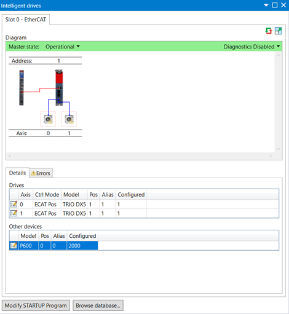
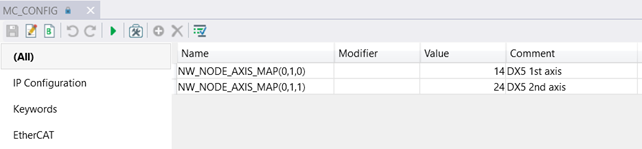
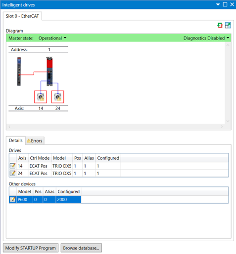

System Array (MC_CONFIG)
NW_NODE_AXIS_MAP(slot, device_address, axis_index) = value
This 3D array can be used to over-ride the drive to controller axis mapping for multi axis drives of any EtherCAT subdevice. This can be used to define a user specific axis map to fix axes from different sources in place.
The array is 3-dimensional, the first dimension is the master slot identifier, the second dimension is the address of the device. This is usually set on the device using front panel switches or written into EEPROM using MotionPerfect. The third dimension is the axis index in the drive starting from 0.
An error is raised if the axis requested is already in use when the EtherCAT protocol is started.
|
0 |
EtherCAT axis is allocated automatically (default) |
|
>= 1 |
EtherCAT drive is located at this axis |
Configure double axis drive TRIO DX5 from axis number 0 to axis number 14 and axis number 1 to 24 respectively.
Initial configuration before adding the required commands to MC_CONFIG:

MC_CONFIG entries to change the axis numbers:

Text mode:
'DX5 first axis
NW_NODE_AXIS_MAP(0, 1, 0) = 14
'DX5 second axis
NW_NODE_AXIS_MAP(0, 1, 1) = 24
After reset of the MC:

NODE_AXIS_COUNT , NODE_INDEX , NODE_PROFILE , NODE_AXIS , NODE_AXIS_MAP